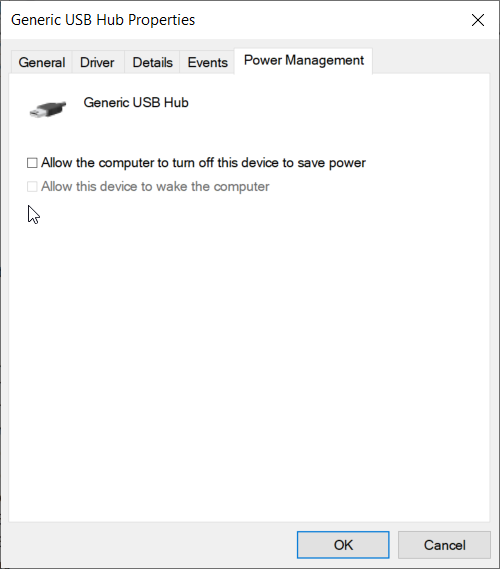
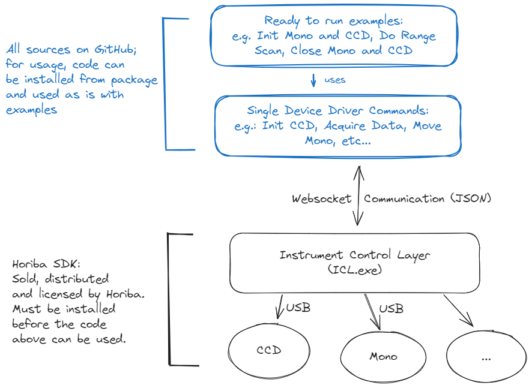

|
HORIBA C++ SDK
Library for HORIBA devices
|
|
HORIBA C++ SDK
Library for HORIBA devices
|


horiba-cpp-sdk is a C++ library that provides source code for the development with HORIBA devices.
⬇️⬇️⬇️⬇️⬇️⬇️⬇️⬇️⬇️⬇️⬇️⬇️⬇️⬇️⬇️⬇️⬇️⬇️⬇️⬇️⬇️⬇️⬇️⬇️⬇️⬇️⬇️⬇️⬇️⬇️⬇️
⬆️⬆️⬆️⬆️⬆️⬆️⬆️⬆️⬆️⬆️⬆️⬆️⬆️⬆️⬆️⬆️⬆️⬆️⬆️⬆️⬆️⬆️⬆️⬆️⬆️⬆️⬆️⬆️⬆️⬆️⬆️
horiba-cpp-sdk is a library that provides source code for the development of custom applications that include interaction with HORIBA devices, namely monochromators and multichannel detectors (e.g. CCD cameras). Future versions of this package will include access to more devices. The SDK exists for several programming languages:
HORIBA SDK, licensed and activated. The HORIBA SDK can be purchased by contacting the Horiba Support and sending a message to the Scientific business segment, specifying no division and selecting the sales department
Create a new folder with the following structure:
Get the CPM.cmake CMakeLists script from https://github.com/cpm-cmake/CPM.cmake/releases/tag/v0.38.7 and put it in the cmake folder
Or get the latest using the following command:
Create a CMakeLists.txt in the root folder:
Put the following into the main.cpp:
cmake -S . -B ./build -G Ninja (replace Ninja with "Unix Makefiles" if you don't have Ninja or with "Visual Studio 17 2022" if you use Visual Studio 2022)cmake --build build./build/horiba_cpp_exampleThe functionality is distributed over two parts, the instrument control layer (ICL) and the github source code. This split is shown in the following image:

The ICL itself is sold and distributed by HORIBA. The source code to communicate with the ICL and drive the instruments is located in this repo for C++, but can be also found for Python, C#, C++ and LabVIEW as described above. The communication between SDK and ICL is websocket based. I.e. in essence the ICL is steered by a command and control pattern where commands and their replies are JSON commands.
For more details on the usage of the library and a list of examples, see:
For contributors to the library: